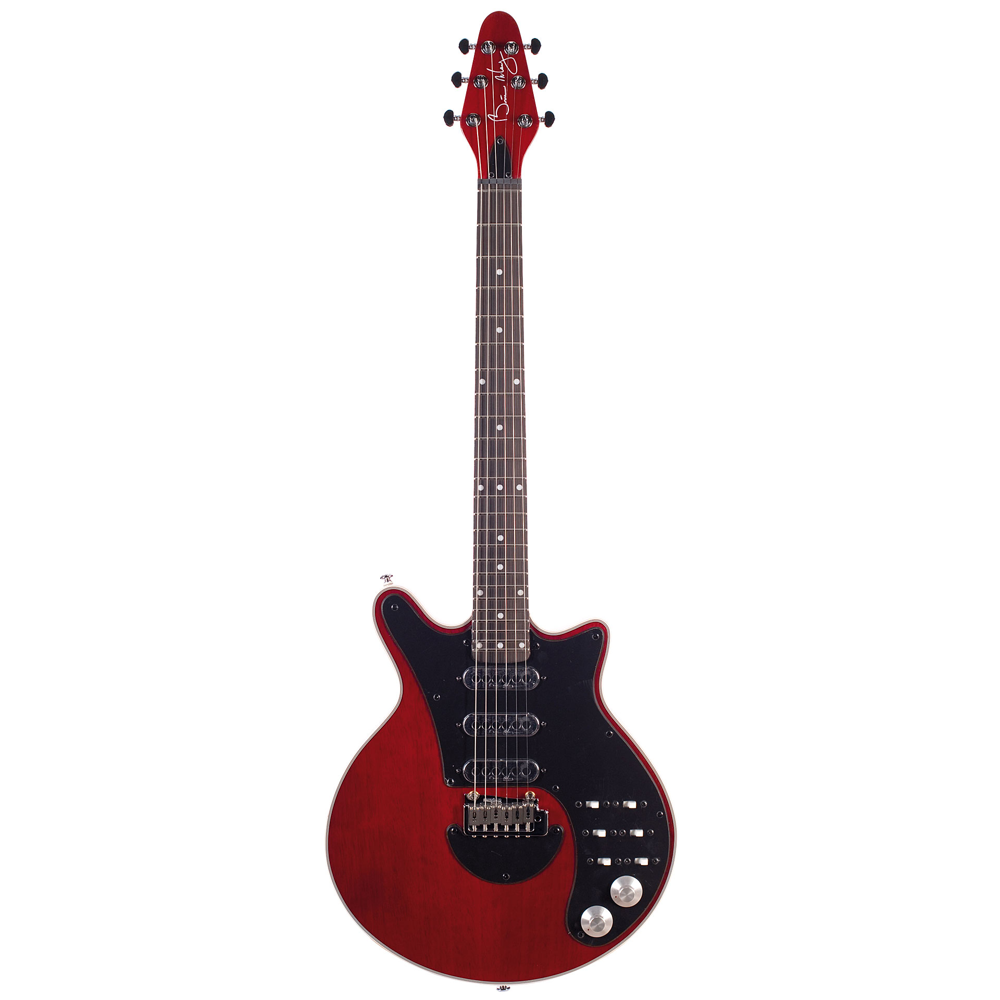

Ibanez Pia black and gold
Modelo Signature de Ibanez para Steve Vai
Especificaciones
- Modelo: Serie Pia
- Marca: Ibanez
- Color: Negro con herrajes dorados
- Material: Cuerpo de aliso
- Dipasón de palisandro
- 24 trastes Jumbo de acero inoxidable
- Pastillas Dimarzio UtoPia neck
- Pastillas Dimarzio UtoPia bridge
- Pastillas Dimarzio UtoPia inter

Musicman Majesty 20 aniversario
Modelo Signature de Musicman para John Petrucci
Especificaciones
- Modelo: Majesty 20 aniversario
- Marca: Musicman
- Color: Tapa de arce flameado sobre cuerpo de caoba de Honduras
- Material: Caoba de Honduras
- Puente Custom John Petrucci
- Diapasón de ebano
- Dimarzio LiquidFire neck
- Dimarzio CrunchLab bridge
- Sistema piezo eléctrico en el puente
- Disponible en versión de 7 y 6 cuerdas

Fender Stratocaster Jimi Hendrix series
Modelo Signature en conmemoración a Jimi Hendrix
Especificaciones
- Modelo: Stratocaster Artist Signature modelo JH
- Marca: Fender
- Color: blanco
- Cuerpo: madera de aliso
- Dipasón:Arce
- 3 pastillas de bobina simple American Vintage 65
- Clavijero invertido
- Firma de Jimi Hendrix en parte posterior de clavijero

Red Special
Modelo Signature de Brian May
Especificaciones
- Modelo:Red Special
- Marca: Brian May Guitars
- Color: Antique cherry
- Cuerpo:caoba
- Diapasón:ebano>
- Pastilla mástil:Tri-Sonic Style
- Pastilla posición intermedia:Tri-Sonic Style
- Pastilla puente:Try-Sonic Style
- Puente Wilkinson Tremolo